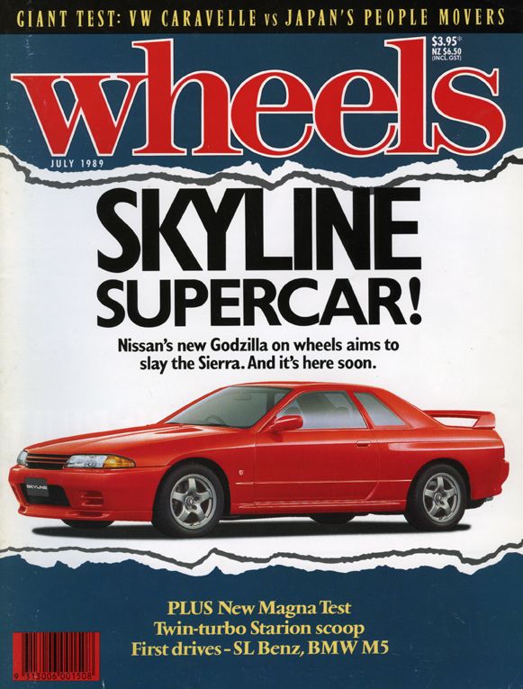

El mito detras del auto
Martin Almada 27/11/23
El creador del nombre de Godzilla fue la prensa australiana. Esta portada de la revista «wheels» sería la primera vez que se podría ver en una publicación pero en las retransmisiones era frecuente escuchar la referencia al monstruo mitológico japonés
Fuente